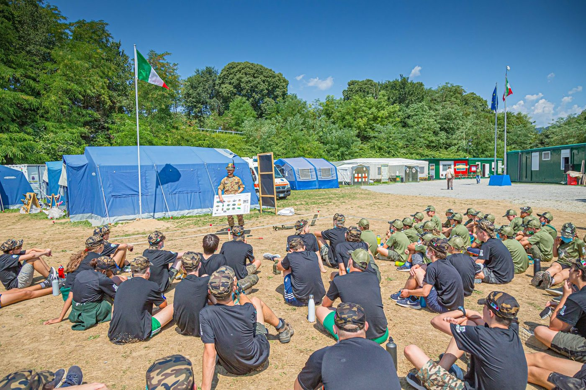
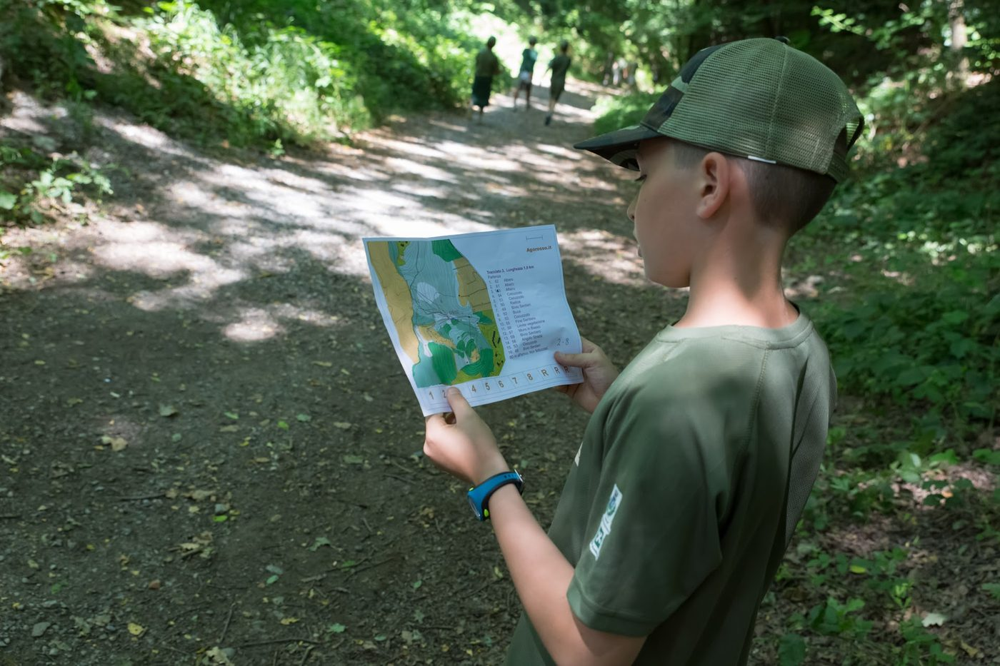
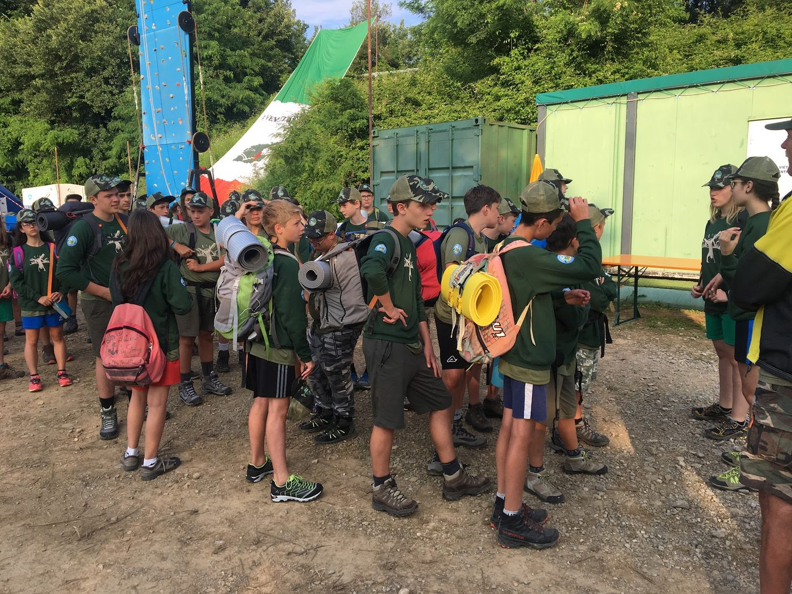
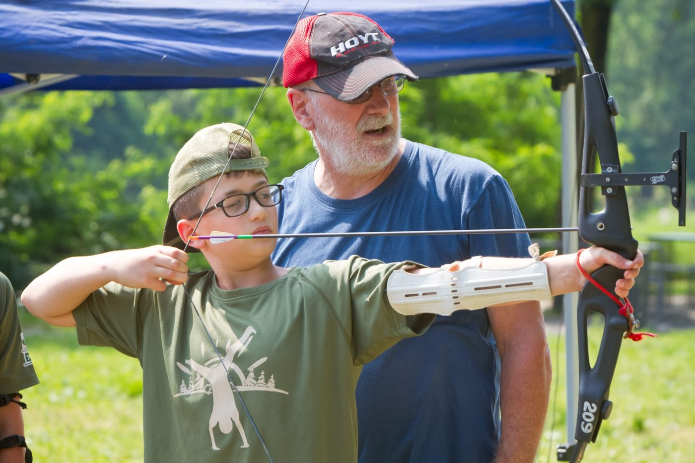
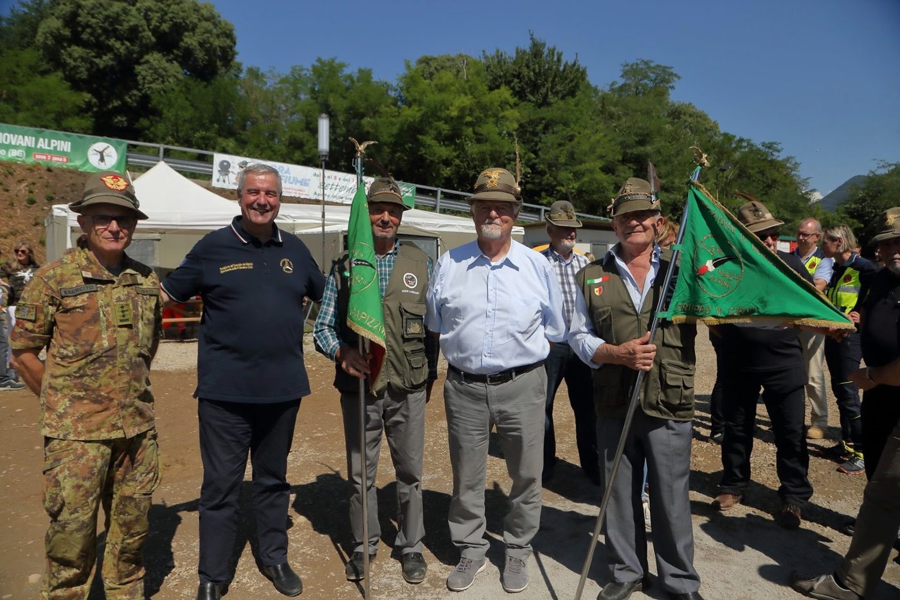
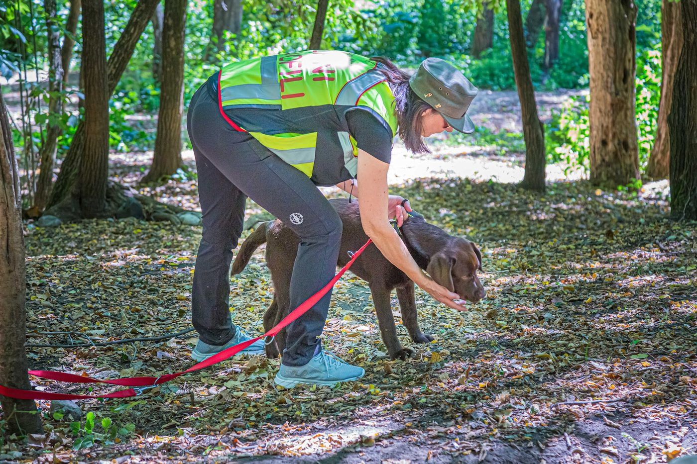
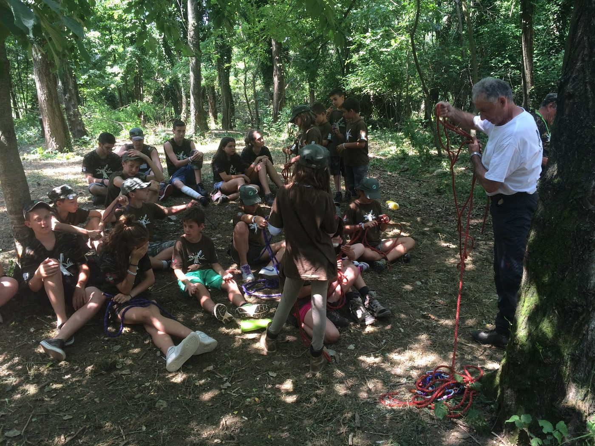
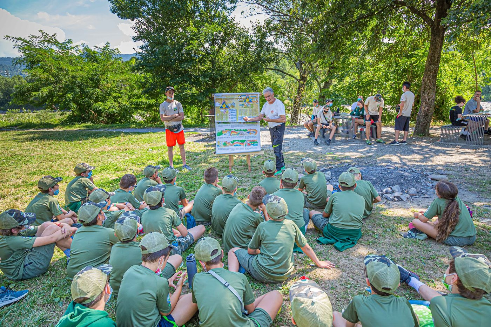
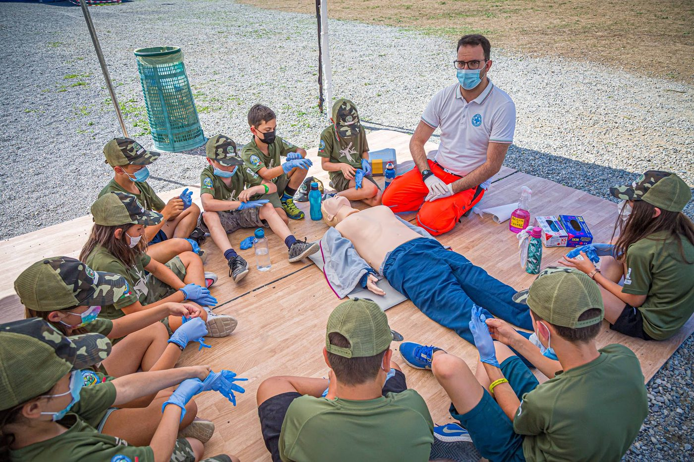

Un campo estivo residenziale che unisce natura, avventura e formazione, per ragazzi dalla 3ª elementare alla 3ª media.
Il Campo Scuola è un movimento educativo per ragazzi basato sul volontariato, apolitico e aperto a tutti senza distinzione di origine, razza o religione, secondo i principi dell'Associazione Nazionale Alpini (ANA). È organizzato in collaborazione con l'Ospedale da Campo ANA — Sanità Alpina, presente con infermieri e medici volontari.
Il percorso accompagna i ragazzi dalla 3ª elementare fino all'ingresso, da adulti, nello staff del campo: caposquadra, istruttore, logistico o cuoco. Circa il 60% dei partecipanti torna l'anno successivo.

Un'area naturale di circa 11.000 m² lungo il fiume Brembo, ad Almenno San Bartolomeo (BG). I ragazzi dormono in tende, divisi in brigate: niente cellulari durante il turno.
Un programma tecnico e sportivo pensato per fasce d'età, con attività diverse per elementari e medie.








Trattandosi di un campo per minorenni, sicurezza e comunicazione con le famiglie sono centrali.